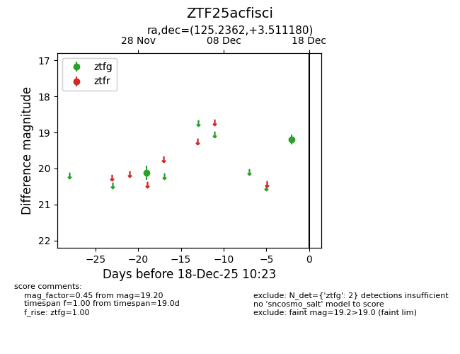
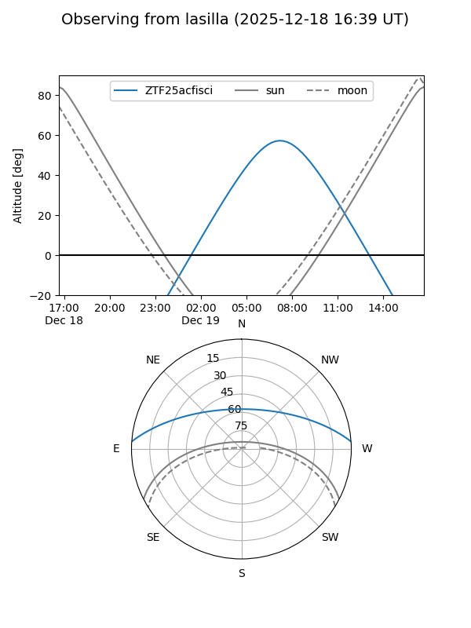
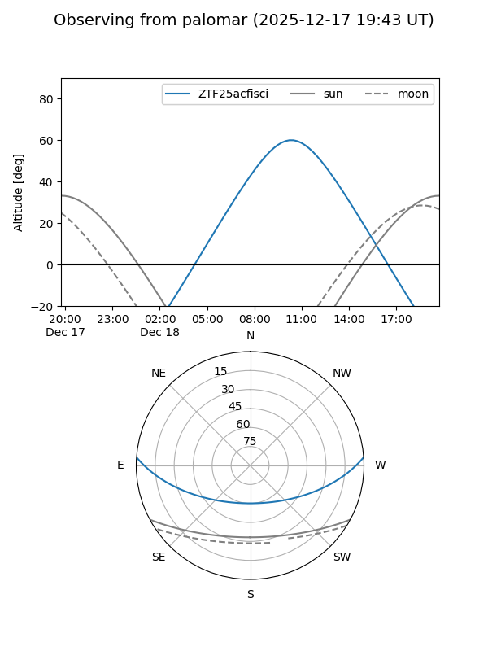

ZTF25acfisci
Target ZTF25acfisci at 2025-12-18 11:17
Aliases and brokers:
FINK: fink-portal.org/ZTF25acfisci
Lasair: lasair-ztf.lsst.ac.uk/objects/ZTF25acfisci
ALeRCE: alerce.online/object/ZTF25acfisci
alt names
ZTF25acfisci (ztf,fink_ztf)
Coordinates:
equatorial (ra, dec) = 125.2362,+3.51118
equatorial (HMS+DMS) = 08:20:56.68,+03:30:40.25
galactic (l, b) = (220.2639,+21.47548)
Photometry
last ztfg=19.20
2 ztfg detections
Lightcurve

Visibility


Additional plots